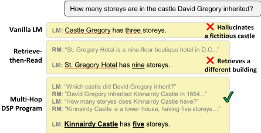
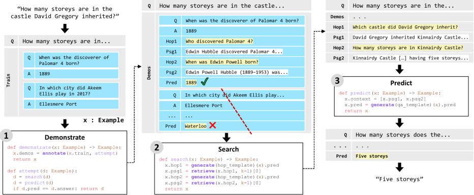

Demonstrate-Search-Predict：为知识密集型 NLP 组合检索与语言模型
论文针对知识密集型 NLP 任务中简单'retrieve-then-read'检索增强流水线的局限：当检索不到能直接回答问题的段落时系统失败，且 LM 参数化知识不可靠、易编造。论文提出 DSP 框架，用可组合的 Python 原语在冻结 LM 与 RM 之间传递自然语言文本，构建 DEMONSTRATE-SEARCH-PREDICT 三阶段程序：DEMONSTRATE 用端到端标签弱监督自动引导流水线中间步骤的演示，SEARCH 用 LM 生成查询做多跳检索并融合结果，PREDICT 结合 CoT 与 self-consistency 聚合候选答案。在 Open-SQuAD、HotPotQA、QReCC 上，DSP 程序相对 vanilla GPT-3.5、retrieve-then-read 与 self-ask 分别取得 37-120%、8-39%、80-290% 的相对提升，HotPotQA 达 51.4% EM。核心结论是：复杂任务应从通用端到端提示转向任务感知的显式程序编排，把控制流交给程序而非 LM 补全，这直接对应团队在 RAG 上下文组织、提示资产复用与 Agent harness 设计上的关注点。
现有检索增强 in-context learning 局限于简单的'retrieve-then-read'流水线：RM 检索不到直接回答问题的段落时系统失败，且 LM 参数中存储的知识常不可靠、会编造事实（尤其在多跳问题上）。论文要解决如何让冻结 LM 与 RM 通过更精细的程序化交互，可靠地完成开放域、多跳、对话式等知识密集型任务，且无需为查询生成、查询分解等中间变换人工标注。
提出 DSP 框架（Python 库）：以 Example 数据类型为载体，用可组合原语（annotate、sample、knn、crossval、retrieve、fused_retrieval、generate、rank、branch、majority 等）把流水线表达为在 LM 与 RM 之间传递文本的显式程序。三大阶段：(1) DEMONSTRATE 用端到端标签做弱监督，通过 annotate 缓存成功尝试的中间预测（查询、段落）自动 bootstrap 演示，并支持 sample/knn/crossval 选择演示以适配上下文窗口；(2) SEARCH 用 LM 生成每跳查询、逐跳检索并摘要累积上下文、以'N/A'作终止条件，支持多查询结果融合（CombSUM 变体）与对话查询改写；(3) PREDICT 用 CoT + self-consistency、多流水线采样（PoT）、MCQ 候选比较或 RM rank 选择有依据的答案。关键设计是把控制流交给显式程序而非 LM 补全，避免 self-ask 式的'self-distraction'。
总体：DSP 程序相对 vanilla LM（GPT-3.5）、标准 retrieve-then-read 流水线、self-ask 流水线分别取得 37-120%、8-39%、80-290% 的相对提升
Open-SQuAD：DSP 达 36.6% EM，较 vanilla LM 相对提升 126% EM，较 retrieve-then-read 相对提升 8% EM / 6% F1；self-ask 仅 9.3% EM；16-shot DSP 超过微调系统 DPR（29.8% EM）
HotPotQA（fullwiki）：DSP 达 51.4% EM，较 vanilla LM、retrieve-then-read、self-ask 分别相对提升 82%、39%、80% EM；高于同期参考结果 CoT（25.2% EM）、PaLM-540B self-consistency（33.8% EM）、Wikipedia API 搜索系统（35.1% EM）
QReCC：以 novel-F1（nF1）报告，结果模式与 SQuAD、HotPotQA 一致（具体数值在正文未展示的 Table 1 中）
主要区别：(1) 主张简单任务无关的 in-context learning 流水线应让位于任务感知的显式策略，并把控制流交给程序而非 LM 补全——self-ask 把状态维护在 prompt 内、由 LM 补全驱动，会产生'self-distraction'；(2) DEMONSTRATE 用端到端标签通过 annotate 自动引导整条流水线的中间演示（查询、段落），无需人工标注中间变换，推广了仅在单个提示内自生成 CoT 理由的方法；(3) 将演示引导与选择（sample/knn/crossval）、多跳检索、查询融合、self-consistency、PoT 采样等统一为可组合原语，类比 PyTorch 的分层模块化设计，但传递文本而非张量、不涉及反向传播。
相关度级别：high
命中能力域：3.1 上下文工程与记忆 | 3.2 提示工程 | 3.3 Agent 架构与工具使用
理由：直接命中三个核心能力域。3.1：DSP 是 RAG/检索增强的代表性工作，系统给出上下文组织策略——用 sample/knn/crossval 选择演示以适配上下文窗口、多跳检索中逐跳摘要累积上下文、fused_retrieval 多查询融合；3.2：Template 抽象统一提示构造与解析，DEMONSTRATE 用端到端标签自动 bootstrap 演示，是提示资产化与自动提示构造的早期范式；3.3：'控制流交给显式程序、LM/RM 只做小变换'的 harness 设计、把检索作为一等工具调用、逐跳规划与终止条件，正是 Agent loop 与工具使用设计的核心议题，且与 self-ask 的对比给出了'让 LM 掌控控制流会导致 self-distraction'的实证教训。
建议动作：深入精读并做内部分享
arXiv:2212.14024v2 [cs.CL] 2023年1月23日
Omar Khattab 1 Keshav Santhanam 1 Xiang Lisa Li 1 David Hall 1 Percy Liang 1 Christopher Potts 1 Matei Zaharia 1
检索增强的上下文学习（in-context learning）已成为利用冻结语言模型（LM）和检索模型（RM）解决知识密集型任务的一种强大方法。现有工作将二者以简单的“检索后阅读”（retrieve-then-read）流水线形式结合，即由 RM 检索若干段落并插入 LM 的提示（prompt）中。为了开始充分释放冻结 LM 与 RM 的潜力，我们提出了 DEMONSTRATE-SEARCH-PREDICT（DSP），这是一个依靠在 LM 与 RM 之间通过复杂流水线传递自然语言文本的框架。DSP 能够表达高层程序，这些程序可自举（bootstrap）感知流水线的演示（demonstrations）、搜索相关段落并生成有依据的预测，从而系统地将问题分解为 LM 和 RM 能够更可靠处理的小型转换。我们为开放域、多跳和对话式设置下的问答编写了新颖的 DSP 程序，在早期评估中确立了新的最先进（state-of-the-art）上下文学习结果，相对于原始 LM（GPT-3.5）、标准的“检索后阅读”流水线以及同时期的 self-ask 流水线，分别取得了 37-120%、8-39% 和 80-290% 的相对提升。我们已在 https://github.com/stanfordnlp/dsp 发布 DSP。
上下文学习（in-context learning）通过让冻结的语言模型（language model, LM）以文本提示为条件来使其适应任务，该提示包含任务指令和少量演示示例（McCann et al., 2018; Radford et al., 2019; Brown et al., 2020）。对于问答、事实核查和信息寻求式对话等知识密集型任务，检索模型（retrieval model, RM）正被越来越多地用于从大规模语料库中获取相关信息来增强提示（Lazaridou et al., 2022; Press et al., 2022; Khot et al., 2022）。
1 斯坦福大学。通信作者：Omar Khattab < okhattab@cs.stanford.edu >。

近期工作已经表明，这种检索增强的上下文学习在简单的“检索后阅读”（retrieve-then-read）流水线中是有效的：查询被输入 RM，检索到的段落成为提示的一部分，为 LM 在其回答中使用提供上下文。在本工作中，我们认为，LM 和 RM 都消费（并生成或检索）自然语言文本这一事实，为二者之间远为复杂的交互创造了机会。充分实现这一点将具有变革性意义：冻结的 LM 和 RM 可以作为跨任务的基础设施，使机器学习（ML）专家和领域专家都能在较高的抽象层次上、以更低的部署开销和标注成本快速构建有据可依的 AI 系统。
图 1 初步展示了检索增强的上下文学习的威力，同时也展示了“检索后阅读”的局限性（Lazaridou et al., 2022; Izacard et al., 2022）。我们的查询是"How many storeys are in the castle David Gregory inherited?"（大卫·格雷戈里继承的城堡有多少层？）。当被提示回答该问题时，GPT-3.5（text-davinci-002；Ouyang et al. 2022）编造了一座带有错误属性的虚构城堡，这凸显了一个常见的观察结果：存储在 LM 参数中的知识往往不可靠（Shuster et al., 2021; Ishii et al., 2022）。引入 RM 组件会有所帮助，因为 LM 可以将其回答建立在检索到的段落之上，但僵化的“检索后阅读”策略会失败，因为 RM 无法找到能直接回答该问题的段落。
预印本。

总而言之，本工作做出了以下贡献。首先，我们主张，用于上下文学习（in-context learning）的简单任务无关流水线应当让位于精心设计的、任务感知的策略。其次，我们表明这种转变未必是一种负担：借助 DSP，这类策略可以通过可组合的算子轻松表达为简短的程序。第三，这种可组合性催生了强大的能力，例如根据最终任务标签自动为复杂流水线标注演示样本。第四，针对三个知识密集型任务，我们实现了丰富的程序，确立了上下文学习的最先进（state-of-the-art）结果。
我们现在介绍 DSP 框架，并通过提出若干种让 LM 与 RM 协同配合以有效解决复杂问题的策略，来展示其表达能力。我们在 §3 中表明，这类策略优于现有的上下文学习方法。我们首先讨论 DSP 赖以构建的 LM 与 RM 基础模块（§2.1），然后讨论 DSP 中的数据类型与控制流（§2.2）。随后，我们逐一讨论这三个推理阶段：DEMONSTRATE（§2.3）、SEARCH（§2.4）和 PREDICT（§2.5）。
一个 DSP 程序定义了语言模型 LM 与检索模型 RM 之间的通信。
**语言模型** 我们调用一个冻结的语言模型 LM 来有条件地生成（或评分）文本。对于每次调用，程序会准备一个提示（prompt），使 LM 适应某项特定功能（例如回答问题或生成查询）。提示通常包含指令、若干个展示期望行为的示例（demonstration），以及一个待回答的输入查询。
如图 2 所示，LM 不仅生成：(i) 输入问题的最终答案（在 PREDICT 阶段），还生成 (ii) 用于为输入问题查找有用信息的中间“跳”（hop）查询（SEARCH），以及 (iii) 展示如何为训练集中的问题生成查询的范例查询（DEMONSTRATE）。这种对 LM 的系统性使用是 DSP 程序的一个标志性特征。
**检索模型** DSP 程序还会调用一个冻结的检索模型 RM，为给定查询检索 top-k 个最“相关”的文本序列。RM 可以对大规模的预定义段落集合建立索引以实现可扩展的搜索，而这些段落可以在不更改检索参数的情况下进行更新。RM 接受自由格式的文本输入，并专长于估计文本序列与查询之间的相关性（或相似度）。
如图 2 所示，RM 负责检索 (i) LM 所生成的每个查询对应的段落（在 SEARCH 阶段），还负责检索 (ii) 在示例中使用的段落（DEMONSTRATE）。在后一种情况下，RM 的贡献与其说是为输入问题提供直接相关的信息，不如说是帮助 LM 适应领域和任务。
尽管在本例中并未用到，RM 在 DSP 中还承担诸如从任务训练数据中检索“最近邻”示例（DEMONSTRATE）以及从 LM 中挑选有充分依据的生成序列（PREDICT）等功能。
我们已用 Python 实现了 DSP 框架。本节介绍该框架提供的核心数据类型和可组合函数。我们使用说明性的代码片段来使示例具体化，并借此展示能够以简单程序表达 LM 与 RM 之间复杂交互所带来的强大能力。
**Example 数据类型** 为执行任务，DSP 程序会操作一个或多个 Example 数据类型的实例。Example 的行为类似于具有多个字段的 Python 字典。程序通常会获得若干训练示例。下面的代码片段以多跳问答为例说明了这一点。
1 from dsp import Example
2
3 train = [Example(question="When was the discoverer of Palomar 4 born?", answer="1889"),
4 Example(question="In which city did Akeem Ellis play in 2017?", answer="Ellesmere Port")]
该片段包含两个带标注的示例，每个示例包含一个多跳问题（例如"In which city did Akeem Ellis play in 2017?"）及其简短答案（"Ellesmere Port"）。Example 中允许使用任意的键和值，不过典型的值是字符串或字符串列表。
在这项任务中，我们不太可能找到单独一段文本就能回答任意问题。例如，第一个训练示例很可能只能通过先回答“谁发现了 Palomar”（"Edwin Hubble"）这一问题，再利用不同的证据段落来处理 Hubble 的出生日期问题才能解决。我们通常假设人工标注的训练数据并不包含对执行这些步骤有用的中间转换（例如针对每一跳的查询）的标注，因此，通过上下文学习（in-context learning）来发现这些策略是 DSP 程序的职责。
**DSP 程序** 下面的代码片段是一个完整的程序，它借助上文那样的 train 示例来解答如图 1 所示的多跳问题。
1 def multihop_program(question: str) -> str:
2 x = Example(question=question , train=train)
3 x = multihop_demonstrate(x)
4 x = multihop_search(x)
5 x = multihop_predict(x)
6 return x.answer
7
8 multihop_program("How many storeys does the castle David Gregory inherited have?")
9 # => "five storeys"
该程序接收输入（此处为一个问题）并输出系统输出（即其简短答案）。它首先为输入问题创建一个 Example，并将 train 字段赋值为上一个代码片段中的训练集。程序通过调用和组合 DSP 原语（即内置函数）来构建定义该程序的 DEMONSTRATE、SEARCH 和 PREDICT 变换。
变换（Transformations） 变换（transformation）是一个以 Example 为输入并返回 Example 的函数，会在其中填充新字段（或修改已有字段）。该程序调用了三个由开发者定义的变换，即 multihop_demonstrate、multihop_search 和 multihop_predict。变换本身可以调用其他变换，其作用类似于 PyTorch 等标准深度神经网络（DNN）编程框架中的层（layer），不同之处在于它们之间传递的是文本数据而非张量，并且不涉及反向传播。
我们根据变换在 DEMONSTRATE、SEARCH 和 PREDICT 三个阶段之一中所表现的行为（或目的）对其进行分类。尽管如此，DSP 并不强制要求这种分类，而是允许我们定义可能融合这些阶段的函数。接下来我们将逐一讨论这三个阶段。
众所周知，在语言模型（LM）的提示（prompt）中加入体现其期望行为的示例，通常能带来更好的性能（Brown et al., 2020）。在 DSP 中，演示（demonstration）是指经过准备、用以展示 LM 特定期望行为的训练样本。一个 DEMONSTRATE 变换接受类型为 Example 的输入 x，并在 x.demos 中准备一个演示列表，其典型做法是从 x.train 的训练样本中选取一个子集，并在其中自举（bootstrapping）出新的字段。
自举演示 训练集中的样本通常由任务的输入文本和目标输出组成。DEMONSTRATE 阶段能够通过以编程方式为中间变换自举标注，来增强一个训练样本。在我们贯穿全文的“多跳”（multi-hop）示例中，演示展示了三种基于 LM 的变换：(i) 如何对输入问题进行分解，以便收集回答该问题所需的信息（即第一跳检索）；(ii) 如何利用在较早一“跳”中收集到的信息来提出后续问题；以及 (iii) 如何利用所收集的信息来回答复杂问题。
1 Examples = list[Example] 2 Transformation = Callable[[Example], 3 Optional[Example]] 4 5 annotate(train: Examples , fn: Transformation) 6 -> Examples
annotate 原语类似于一个特化的 map：它接受用户定义的变换 fn，并将其应用于一个训练样本列表。每当 fn 返回一个样本（而不是 None）时，annotate 就会缓存中间预测结果（即生成的查询和检索到的段落）。这些预测结果将作为流水线变换的成功演示。在简单的用法中，fn 可以尝试以零样本（zero-shot）方式对该样本进行一次或多次回答。这通常通过调用程序的 SEARCH 和 PREDICT 阶段来完成。当产生出一个答案时，如果 fn 评估其正确，它就会返回一个已填充了中间预测结果的样本。
案例研究 下面的代码片段定义了函数 multihop_demonstrate（在 multihop_program 的第 3 行中被调用），并展示了 annotate 的用法。
1 from dsp import sample , annotate 2 3 def attempt_example(d: Example): 4 d = d.copy(demos=[]) 5 d = multihop_search(d) 6 d = multihop_predict(d) 7 return d if d.pred == d.answer else None 8 9 def multihop_demonstrate(x: Example): 10 demos = annotate(x.train, attempt_example) 11 return Example(x, demos=demos)
在第 10 行中，multihop_demonstrate 调用了 annotate，后者通过缓存来自 attempt_example 的标注来自举训练样本中缺失的字段。变换 attempt_example 接收一个训练样本 d，并尝试以零样本方式回答它：它创建一个不带任何演示的 d 的副本（第 4 行；即零样本），并调用多跳搜索与预测流水线（第 5 行和第 6 行）。每个变换都会返回一个填充了额外字段的 d 的更新版本。如果流水线回答正确（第 7 行），则返回更新后的 d。
图 2 展示了这一行为。DEMONSTRATE 将一个训练用问答对转换为一个完整填充的演示（demonstration），其中包括 hop1 和 hop2（即用于多跳搜索的查询）以及 psg1 和 psg2 等字段。当之后调用语言模型（LM）来执行某个变换时，例如在 SEARCH 期间生成“第二跳”（second-hop）查询，psg1 字段便充当上下文，而 hop2 字段则充当这一特定训练样本的标签。
讨论：这一简单的案例研究展示了 DSP 抽象中组合的力量。由于流水线是一个定义良好的程序，其中各变换通过传递附加在 Example 上的文本进行通信，一种简单的映射-过滤（map-and-filter）策略便可以利用 LM 和检索模型（RM），从最终任务标签出发为完整流水线自举生成标注。这是一种可扩展的策略，即使在其最简单的形式下，它也推广了 Zelikman et al. (2022)、Wei et al. (2022)、Zhang et al. (2022) 和 Huang et al. (2022) 近期探索的方法，即由 LM 为单个提示（prompt）自我生成思维链（chain-of-thought, CoT）推理依据。
通过自举构建流水线，DEMONSTRATE 使得在 SEARCH 和 PREDICT 中探索复杂策略变得容易，而无需为每个变换编写示例。这包括在传统检索增强 NLP 中若没有定制标注便难以探索的策略。例如，Khattab et al. (2021a) 提出了一个以弱监督方式训练的多跳推理流水线，该工作扩展了 Lee et al. (2019) 和 Khattab et al. (2021b) 的研究。在该流水线中，需要检索的 3 个或 4 个目标段落必须加以标注，但系统会自动发现“跳”（hops）的最佳顺序。
相比之下，DSP 允许我们在没有中间步骤标签的情况下构建复杂流水线，因为我们可以用小型变换组合出程序。如果 LM 和 RM 能够以“零样本”（zero-shot，即在没有演示的情况下）方式在至少一两个样本上准确处理此类变换，那么这些样本便可以借助最终任务标签被发现，并用作演示。
借助我们先前与 PyTorch 等 DNN 框架的类比，DEMONSTRATE 旨在以可扩展的方式取代反向传播的功能，其做法是模拟程序的行为（对应一次“前向”传播）并以编程方式从错误中学习。在使用冻结模型且仅有最终任务标签的情况下做到这一点，DEMONSTRATE 带来了高度的模块化。具体而言，在无需对中间变换进行人工标注的情况下，开发者便可以更换训练领域、更新训练样本或修改程序的策略，并使用 annotate 自动填充演示所需的所有中间字段。
选择演示 并非总能将所有训练样本都放入 LM 的上下文窗口中。DSP 提供了三个用于选择训练样本子集的原语（primitive），即 sample、knn 和 crossval。
1 sample(train: Examples , k: int) 2 -> Examples 3 4 knn(train: Examples , cast: Callable[[Example], str]) 5 -> fn(example: Example , k: int) # currying 6 -> Examples 7 8 crossval(train: Examples , n: int, k: int) 9 -> fn(evaluate: Transformation) 10 -> Examples
作为基线选择，可以使用 sample 原语从 train 中随机采样 k 个演示，这是 Brown 等人（2020）及其后许多工作所采用的方法。我们还可以利用 RM 的表示，从训练集中选取输入文本的 k 个最近邻，这是 Liu 等人（2021）探索的一种策略。另一种策略是应用交叉验证，在多个采样得到的演示集合中进行选择（Perez 等人，2021）。例如，给定 |train| = 100 个训练样本，crossval 会选出 n 个各含 k = 5 个样本的子集，并返回使变换 evaluate 在其余 95 个样本上表现最好的那个集合。
组合与扩展 通过操作演示与高阶变换，这些简单的选择与自举原语可以被组合起来，以实施更大规模的新型策略。如果训练集非常大（例如 |train| = 100,000），我们可以执行 knn 找到最近的 k = 16 个样本并仅对这些样本进行标注，从而得到一个能够实时增量学习的系统。如果训练集规模适中（例如 |train| = 1000），我们可以执行 crossval，并缓存其在每个训练样本上所评估的所有提示的性能。在测试时，我们可以使用 knn 找到与测试输入相似的 k = 50 个样本，并选择在这 k 个样本上表现最好的提示，从而得到一个自适应系统，该系统以其流水线在不同类型样本上的表现质量为依据。
1 from dsp import generate 2 3 def multihop_search_v2(x, max_hops=3): 4 x.hops = [] 5 6 for hop in range(max_hops): 7 summary , query = generate(hop_template)(x) 8 x.hops.append((summary , query)) 9 10 if query == 'N/A': break 11 12 passages = retrieve(query , k=5) 13 x.context = [summary] + passages 14 15 return x
在 multihop_search_v2 中，第 7 行调用了 generate 原语，该原语调用 LM 为每次检索跳生成一个查询。LM 以使用 hop_template 模板准备的提示为条件。（我们在 §2.5 中讨论提示模板和 generate 原语。）此处，该模板可被设计为生成具有如下格式的提示（例如，针对第二次跳）。
1 My task is to write a simple query that gathers information for answering a complex question. I write N/A if the context contains all information required. 2 3 {Task demonstrations from x.demos , if any} 4 5 Context: {x.context} 6 Question: {x.question} 7 Summary: Let's summarize the above context. __{summary}__ 8 Search Query: __{query}__
如上所示，LM 被指示阅读在先前各跳中检索到的上下文以及一个复杂问题，随后被提示写出：(i) 所提供上下文的摘要，以及 (ii) 一个为回答该问题而收集信息的搜索查询。生成的文本将被提取出来，并赋值给 multihop_search_v2 中的 summary 和 query 变量（第 7 行）。在第 10 行，如果查询为 'N/A'，我们就终止跳过程。否则，第 12 行使用该查询检索 k = 5 个段落，第 13 行为后续的跳（或为 PREDICT）设定上下文，使其包含此前所有跳的摘要以及到目前为止在最后一跳中检索到的段落。
与 self-ask 的比较 将这一多跳 DSP 程序与近期的 'self-ask'（Press et al., 2022）提示技术进行对比可能颇具启发性，我们在 §3 中与该技术进行了比较。Self-ask 可以被视为 DSP 的 SEARCH 阶段的一种简单实例化。在该技术中，LM 会提出一个或多个“后续问题”，这些问题被拦截并发送给搜索引擎。搜索引擎返回的答案被拼接进提示中，并用于回答该问题。这本质上是对 IRRR（Qi et al., 2020）的一种简化模拟。
类似的方法也可用于纠正拼写错误或实现伪相关反馈（pseudo-relevance feedback）(Cao et al., 2008; Wang et al., 2022a)，即利用检索到的段落来指导构造更好的搜索查询，但据我们所知，尚未有人在预训练语言模型（LM）上尝试过这种方法。
PREDICT 阶段使用示例（demonstrations，例如 x.demos 中的内容）和段落（passages，例如 x.context 中的内容）来生成系统输出。PREDICT 需要应对可靠地解决下游任务这一挑战，这在总体上融合了上下文学习（in-context learning）方面的许多工作。在 DSP 中，它还承担着更为专门化的功能，即系统性地聚合来自大量示例、段落和候选预测的信息。
生成候选 一般来说，PREDICT 必须为最终任务生成一个或多个候选预测。为此，PREDICT 中的基本原语是 generate，它接受一个 Template，并（通过柯里化）接受一个 Example，然后查询 LM 以生成一个或多个补全（completions），如 §2.4 中先前所探讨的那样。此阶段中使用 RM 的对应原语是 rank，它接受一个查询和一个或多个段落，并返回它们的相关性得分。
1 Template # template: an object that can produce prompts and parse completions 2 3 generate(template: Template) 4 -> fn(example: Example) 5 -> Completions # object with keys to access extracted preds and scores 6 7 rank(query: str, passages: List[str]) 8 -> List[float] # object with keys to access passage texts and scores
Template 是一个能够生成提示（prompt）的对象，也就是说，它可以将一个 Example 映射为一个字符串，并从补全中提取字段。例如，我们可以将一个包含问题和检索到的段落的示例 x 映射为如下提示：
1 My task is to answer questions using Web documents. 2 3 {Task demonstrations from x.demos , if any} 4 5 Context: {x.passage} 6 Question: {x.question} 7 Rationale: Let's think step by step. __{rationale}__ 8 Answer: __{answer}__
如上所示，LM 将被要求生成思维链（chain-of-thought，CoT；Wei et al. 2022; Kojima et al. 2022）推理依据（rationale）和一个答案，而生成的文本将被提取回来，填入每个补全的 rationale 和 answer 键中。
对 LM 的每次调用都可以采样出多个候选预测。如何选出“最佳”预测是解码（decoding）方面大量研究的主题（Wiher et al., 2022; Li et al., 2022），但冻结的通用 LM 可能不支持对解码进行自定义修改。在这些约束条件下，我们提出了若干在 DSP 中借助 LM 和 RM 来选择预测并聚合信息的高层策略。
选择预测 在多个候选之中，我们可以简单地提取出现次数最多的预测。当使用 CoT 来得出答案时，这就是 Wang et al. (2022c) 提出的自洽性（self-consistency）方法，该方法试图识别多个不同推理依据最终汇聚到的预测。
1 from dsp import generate , majority 2 3 def multihop_predict(x): 4 candidates = generate(template_qa)(x) 5 return x.copy(answer=majority(candidates).answer)
DSP 在两个方面对这一点进行了泛化。首先，我们可以在程序中采样多条“转换流水线”（pipelines of transformations，PoT），而不是在单次转换中局部地采样“思维链”（chain-of-thought，CoT）。这些链甚至可能调用程序中的不同路径，如下所示。
1 from dsp import branch 2 3 def pipeline(x): 4 return multihop_predict(multihop_search_v2(x)) 5 6 def PoT_program(question: str) -> str: 7 x = Example(question=question , train=train) 8 x = multihop_demonstrate(x) 9 10 candidates = branch(pipeline , n=5, t=0.7)(x) 11 return x.copy(answer=majority(candidates).answer)
在上面的代码片段中，第 10 行调用了原语 branch，它以较高的温度（例如 t = 0.7）采样 n 条不同的 PoT，并累积它们的中间预测和最终预测。在此示例中，我们的流水线调用了 multihop_search_v2（§2.4），它在执行 PREDICT 之前，会根据所生成的问题应用数量可变的检索跳数。也就是说，PoT_program 在不同分支之间可能调用程序中多条不同的路径（即每条路径具有不同的多跳查询和各自的跳数）。随后，它从整体上选出多数答案。
DSP 以第二种方式对自洽性（self-consistency）进行了泛化。当采样我们的 CoT 或 PoT 得到多个候选时，我们可以选出前 k 个（例如 top-4）预测，然后直接对它们进行比较。例如，我们可以提示 LM 将这些选项作为多选题（MCQ）候选进行比较，而 DEMONSTRATE 可以为这种转换自动准备示例。这实际上模拟了 Levine et al. (2022) 的 LM 递归，但与他们的方法不同，它既不需要大型训练集，也不需要更新任何（prompt-tuning）权重。openqa_predict 下面展示了这样一种实现。
1 def openqa_predict(x): 2 preds = generate(template_qa , n=20)(x).answers 3 x.choices = most_common(preds, k=4) 4 5 queries = [f"{x.question} {c}" 6 for c in x.choices] 7 8 x.passages = fused_retrieval(queries) 9 x.answer = generate(TemplateMCQ)(x).answer 10 return x
作为另一种比较方法，我们可以通过 rank 调用 RM，找出在检索到的上下文中最有依据的预测（即与检索到的段落拼接结果最相似的预测）；或者，如果所用的 RM 能够对补全结果打分（Krishna et al., 2022），则直接选择在给定提示下得分最高的预测。
信息聚合 当只选中了少量演示示例（demonstrations）或段落时，我们可以简单地将它们全部拼接进提示中。例如，GPT-3.5 text-davinci-002 拥有 4097 个 token 的上下文窗口，我们发现这一大小足以容纳若干（例如 3-5 个）演示示例，而每个演示示例自身还包含各自的段落和推理依据。
为了处理更多的示例（demonstrations）或段落，我们可以进行并行分支，分别处理段落或示例的各个子集，然后使用前文介绍的评分方法之一来聚合各个答案。事实上，Lewis et al. (2020) 和 Lazaridou et al. (2022) 已经探索了将边缘化（marginalization）作为跨段落组合分数的一种方式，而 Le et al. (2022) 则对跨示例的提示进行了集成（ensemble），这些做法都可以用这种方式来表达。
另一种聚合策略是按顺序跨段落累积信息，而不是独立地处理各段落。这实际上正是我们的多跳（multi-hop）方法的工作方式（§2.4）。Gao et al. (2022) 最近也采用了这种策略，用于追溯性地将语言模型（LM）生成的文本归因到引用文献上。他们生成许多查询，但并不采用融合（fusion）（§2.4），而是对每个查询运行其流水线，并利用其输出来修改后续查询的输入。 1
我们现在考虑如何针对三种不同的知识密集型 NLP 任务来实现 DSP 程序：开放域问答（QA）、多跳问答（multi-hop QA）以及对话式问答（conversational QA）。所有这些任务都是“开放域”的，也就是说，系统会收到一个简短的问题，或参与一段多轮对话，但无法获得能够回答这些问题的上下文。
我们针对每个任务构建并评估了由 §2 中所探讨的各项功能直观组合而成的程序。结果表明，尽管开发工作量很低，所得的 DSP 程序仍表现出很高的质量，并且相比朴素的上下文学习（in-context learning）以及结合上下文学习的标准“先检索后阅读”（retrieve-then-read）流水线，带来了可观的实证提升。
在本报告中，我们针对所考虑的每项任务各使用一个开发数据集，即开放域版本的 SQuAD（Rajpurkar et al., 2016; Lee et al., 2019）、开放域"fullwiki"设定下的多跳 HotPotQA 数据集（Yang et al., 2018），以及对话式问答 QReCC 数据集（Anantha et al., 2020; Vakulenko et al., 2022），我们利用后者来开发 DSP 抽象。我们报告在全部三个数据集上的验证集准确率，并在 §3.5 中对其进行详细讨论。
除非另有说明，系统均可使用 16-shot 训练示例，也就是说，每个 DSP 程序可以使用（至多）16 个问题——或在适用情况下为对话——它们是从相应训练集中随机抽取的。我们将验证集和测试集下采样至 1000 个问题（或在适用情况下为 400 段对话），并报告五个随机种子上的平均质量，其中每个种子固定一个单一的 k-shot 训练示例集。为控制语言模型 API 的支出预算，每个种子处理五分之一的评估示例（例如，每个种子处理 200 个问题，总计 1000 个不重复的问题）。
1 尽管本节中的大部分功能均已实现，但原语 branch、knn 和 crossval 目前仍在开发之中。
我们还专门设置了留出的测试数据集（例如 OpenNaturalQuestions；Kwiatkowski et al. 2019）和测试任务（例如 FEVER 中的论断验证；Thorne et al. 2018），它们仅用于评估预先定义好的 DSP 程序，而不用于开发。我们将在本报告的未来版本中加入这些结果。
RM 我们使用 ColBERTv2（Santhanam et al., 2022b），这是一种基于后期交互（late interaction）（Khattab & Zaharia, 2020）的最先进的检索器。我们选择 ColBERTv2 是因为它具有出色的零样本搜索质量和高效的搜索性能（Santhanam et al., 2022a）。不过，我们的 DSP 程序并不依赖检索器表示样本或对段落评分的具体方式，因此基本上可以使用任何检索器。
此外，通过将检索提升为一等构造（first-class construct），DSP 允许我们随时间推移更改或更新搜索索引。我们在实验中通过将每个数据集与最接近的 Wikipedia 语料库对齐来模拟这一点，候选语料库包括来自 Chen et al. 2017 的 2016 年 12 月 Wikipedia 转储、来自 Yang et al. 2018 的 2017 年 11 月 Wikipedia“摘要”转储，以及来自 Karpukhin et al. 2020 的 2018 年 12 月 Wikipedia 转储。
LM 我们使用 GPT-3.5（text-davinci-002；Brown et al. 2020; Ouyang et al. 2022）语言模型。除非另有说明，在生成 n = 1 个预测时我们采用贪心解码（greedy decoding）。当 n > 1 时，我们以温度 t = 0.7 进行采样，与相关工作一致（Wang et al., 2022c）。
Vanilla LM 基线代表了 Brown et al. (2020) 所使用的少样本上下文学习（few-shot in-context learning）范式。开放域问答（open-domain QA）和多跳问答（multi-hop QA）基线从训练集中随机采样 16 个示例（demonstrations，即在我们评估中每个程序可用的全部示例），且不使用证据对这些示例进行增强。类似地，对话式问答（conversational QA）基线采样四个对话。Vanilla 基线不会搜索与输入查询相关的段落。
1 def vanilla_LM_QA(question: str) -> str: 2 demos = sample(train , k=16) 3 x = Example(question=question , demos=demos) 4 return generate(qa_template)(x).pred
Retrieve-then-Read 基线在将提示（prompt）提交给 LM 之前，会先使用 RM 为每个示例提供一段可能相关的段落作为支持。这模拟了最先进的开放域问答系统所采用的流水线（Khattab et al., 2021b; Izacard & Grave, 2020; Hofstätter et al., 2022）。在对话式问答中，我们将第一轮对话与最后一个问题拼接在一起，我们发现这种做法的效果远好于仅使用最后一轮。对于多跳问答，我们为每个问题检索并拼接两个段落。
1 def retrieve_then_read_QA(question: str) -> str: 2 demos = sample(train , k=16) 3 passages = retrieve(question , k=1) 4 x = Example(question=question , 5 passages=passages , 6 demos=demos) 7 return generate(qa_template)(x).pred
Self-ask 我们还将与 self-ask（Press et al., 2022）进行比较，这是一种同期提出的流水线，可以将其视为 DSP 的 SEARCH 阶段的一个特定实例化，后接一个简单的 PREDICT 步骤。为了与我们的方法进行直接比较，我们修改了 self-ask 的控制流，使其查询与我们 DSP 实验中所使用的相同的 ColBERTv2 索引，而非 Google Search。我们评估了 self-ask 的两种配置。第一种使用原始的 self-ask 提示模板，其中包含四个手写的示例。在第二种配置中，我们修改了提示模板，应用了若干我们认为在实证上对 HotPotQA 有用的改动。2
We build on transformations presented in §2. Our programs for all three tasks have the following structure, illustrated for open-domain QA.
1 def openqa_program(question: str) -> str: 2 x = Example(question=question , train=train) 3 x = openqa_demonstrate(x) 4 x = openqa_search(x) 5 x = openqa_predict(x) 6 return x.answer
The exception is that the conversational QA program,
2 In particular: (i) use ColBERTv2-style passages in the handcrafted demonstrations of self-ask (i.e., instead of the original Google-style snippets), (ii) concatenate 16-shot training examples from the task (i.e., question-answer pairs) as a prefix of the prompt, (iii) ask the model to generate a short intermediate answer per retrieval step, and (iv) explicitly ask the model to generate a followup 'search query' at each step. We found the final item to be important because self-ask's default prompt often produces followup questions that are not self-contained (e.g., 'what is the name of the national park?', which is not an informative search query). We also fix the casing in the prompt to be consistent.
| Open-SQuAD.EM | Open-SQuAD.F1 | HotPotQA.EM | HotPotQA.F1 | QReCC.F1 | QReCC.nF1 | |
|---|---|---|---|---|---|---|
| VanillaLM | 16.2 | 25.6 | 28.3 | 36.4 | 29.8 | 18.4 |
| No-retrieval LMSoTA | 20.2 ¶ | - | 33.8 ¶ | 44.6 ¶ | - | - |
| Retrieve-then-Read | 33.8 | 46.1 | 36.9 | 46.1 | 31.6 | 22.2 |
| Self-ask w/ ColBERTv2 Search | 9.3 | 17.2 | 25.2 | 33.2 | - | - |
| + Refined Prompt | 9.0 | 15.7 | 28.6 | 37.3 | - | - |
| Retrieval-augmented LMSoTA | 34.0 ¶ | - | 35.1 ¶ | - | - | - |
| Task-aware DSP Program | 36.6 | 49.0 | 51.4 | 62.9 | 35.0 | 25.3 |
| | Open-SQuAD.EM | Open-SQuAD.F1 | HotPotQA.EM | HotPotQA.F1 | QReCC.F1 | QReCC.nF1 |
convqa_program , accepts turns (i.e., a list of strings, representing the conversational history) instead of a single question . Unless otherwise stated, our programs default to greedy decoding during the DEMONSTRATE stage.
For SEARCH, our open-domain QA program uses the question directly for retrieving k = 7 passages and concatenates these passages into our QA prompt with CoT. For PREDICT, it generates n = 20 reasoning chains and uses self-consistency (SC; Wang et al. 2022c) to select its final prediction. For DEMONSTRATE, our open-domain QA program uses the following approach, slightly simplified for presentation. In it, the parameter k = 3 passed to annotate requests annotating only three demonstrations, which will then be used in the prompts.
1 def openqa_demonstrate(x: Example) -> Example: 2 demos = sample(x.train , k=16) 3 4 def openqa_attempt(d: Example) -> Example: 5 d.demos = all_but(demos , d) # all (raw) examples different from d 6 7 d = openqa_search(d, k=2) 8 if not passage_match(d): return None # skip examples where search fails 9 10 d = openqa_predict(d, sc=False) 11 if not answer_match(d): return None # skip examples where predict fails 12 13 return d 14 15 x.demos = annotate(demos , openqa_attempt , k=3) 16 return x
我们的多跳（multi-hop）程序在 DEMONSTRATE 和 PREDICT 阶段采用了非常相似的方法。对于 SEARCH，它使用 §2.4 中描述的方法，并做了以下调整。它在每一跳（hop）中对 n = 10 个查询进行结果融合，并在这 n 个预测中选用对应平均对数概率最大的那个摘要。对于 HotPotQA，它使用固定的跳数，即两跳。在每个提示（即每一跳和问答 QA）中，它将此前所有跳的摘要（即从第 1 跳开始）与总共 k = 5 个段落（在各跳之间分配，即五个段落全部来自第一跳，或者第一跳两个、第二跳三个）拼接在一起。
对于对话式问答（conversational QA），我们使用一个简单的 PREDICT，它以对话中所有先前的轮次和五个检索到的段落为条件，通过贪心解码生成回复。对于 SEARCH，我们的对话式问答流水线生成 n = 10 个改写后的查询（同时也将简单查询用作 retrieve-and-read 基线；§3.3），并像 §2.4 中那样对它们进行融合。我们以与 openqa_demonstrate 类似的方式实现 DEMONSTRATE，但只为高阶转换 convqa_attempt 采样四个示例（即四轮对话；而非开放域问答中的 16 个问题）来演示该任务，该转换会被传递给 annotate（为简洁起见未展示）。
1 def convqa_attempt(d: Example) -> Example:
2 d.demos = all_but(demos, d) # 所有与 d 的对话不相交的（原始）示例
3
4 d = convqa_search(d, k=2)
5 if max(precision(d.answer, p) for p in d.passages) < .8: return None # 跳过搜索失败的示例
6
7 d = convqa_predict(d, n=20)
8 if max(F1(c.pred, d.answer) for c in d.candidates) < .75: return None # 跳过在 n=20 次尝试中预测失败的示例
9
10 return d
Open-SQuAD 我们在来自 Chen et al. (2017)、并经 Khattab et al. (2021b) 处理的 Wikipedia 2016 语料库上开展 SQuAD 的开放域版本实验。我们使用与 Karpukhin et al. (2020) 和 Khattab et al. (2021b) 相同的训练/验证/测试划分。
表 1 报告了答案的 EM 和 F1。任务感知的 DSP 程序取得了 36.6% 的 EM，相比 vanilla LM 基线获得了 126% 的相对 EM 提升。这表明将 LM 的预测建立在检索之上十分重要，同时也说明像 ColBERTv2 这样最先进的检索器开箱即用便具备这种能力。所提出的 DSP 程序相比 retrieve-then-read 流水线还取得了 8% 的相对 EM 提升和 6% 的相对 F1 提升，这凸显了像我们借助自洽性（self-consistency）所做的那样，跨多条检索到的段落聚合信息能够带来可观的收益。
这些上下文学习（in-context learning）结果与许多流行的微调系统相比具有竞争力。例如，在 Open-SQuAD 测试集上，DPR 取得 29.8% 的 EM，远低于我们 16-shot 的 DSP 程序。在 Open-SQuAD 开发集上，强大的 Fusion-in-Decoder (Izacard & Grave, 2020) “base” 方法在以五条检索段落调用时取得约 36% 的成绩（即与我们系统的质量非常接近）。尽管如此，在默认读取 100 条段落的设置下，他们的系统在本次评估中达到了 48% 的 EM。这可能表明，如果让 PREDICT 阶段在多得多的段落上聚合信息，我们的 DSP 程序也有可能获得类似的提升。
作为对比，我们还评估了 self-ask 流水线，其仅取得 9.3% 的 EM，这表明其固定流水线在默认的多跳（multi-hop）设置之外并不有效。研究其若干错误示例可以发现，它常常以偏离主题的方式分解问题，并转而回答这些偏离的问题。我们将 LM 的这种行为称为“self-distraction”（自我分心），我们认为这为我们 DSP 中的设计决策提供了进一步的佐证。为说明 self-distraction，当 self-ask 被提示“When does The Kidnapping of Edgardo Mortara take place?”时，它会先问“What is The Kidnapping of Edgardo Mortara”，接着问它是何时出版的——这是一个偏离主题的问题。因此，self-ask 回答了“1997”，而不是 The Kidnapping of Edgardo Mortara 事件发生的时间（1858 年）。
作为参考，表 1 还报告了（标注为 No-retrieval LM SoTA）Si et al. (2022) 使用 code-davinci-002 取得的同期上下文学习结果：他们在不使用检索时取得 20.2% 的 EM，使用检索时取得 34.0% 的 EM，尽管其是在 SQuAD 数据的不同样本和划分上进行的。总体而言，他们的方法与我们实现的基线（vanilla LM 和 retrieve-then-read）非常相似，只是其检索增强方法会从 Wikipedia dump 中检索 10 条段落（并将其拼接进提示中）。
HotPotQA 我们使用 HotPotQA 的开放域 'fullwiki' 设置，并采用其官方的 Wikipedia 2017 'abstracts' 语料库。HotPotQA 的测试集是隐藏的，因此我们保留官方验证集用于我们的测试。我们将训练集进一步划分为 90%/10% 的训练/验证子集。在训练（因而也包括验证）子集中，我们仅保留原始数据集中被标记为 'hard' 的示例，这与官方验证集和测试集的标注方式相一致。
我们在表 1 中报告最终答案的 EM 和 F1。在 HotPotQA 上，任务感知的 DSP 程序以极大优势超越了各基线方法和已有工作，在 EM 上分别比 vanilla LM、retrieve-then-read 基线和 self-ask 流水线高出 82%、39% 和 80%。这凸显了构建更复杂的程序来协调 LM 与 RM 以执行 SEARCH 步骤的有效性。
这些结果可与多篇同期论文中对 HotPotQA 的评估结果进行对照。我们首先与不使用检索的方法进行比较，但由于评估方法存在差异，这些比较只能是初步的。Si 等
3 我们移除含有一个或多个空标准答案的对话，以及仅含一两个问题的对话。我们还发现许多对话中包含"what other interesting facts are in this article?"（“本文中还有哪些其他有趣的事实？”）这类问题，它们与开放域设定相冲突，且没有明确定义的答案。因此，我们移除任何包含关键词"other interesting"或"else"的对话，我们发现这些关键词是低质量的标志。
长期以来，人工智能（AI）领域构建模型的主流范式一直以张量表示的乘法运算为核心，而在深度学习时代，这一范式催生了高度模块化（按层组织）的设计，使得快速开发和广泛探索成为可能。然而，这些设计范式需要深厚的领域专业知识，即使是专家，在将不同的预训练组件组合成更大系统时也面临巨大挑战。
上下文学习（in-context learning）的前景在于：我们可以仅以自然语言为媒介，从预训练组件构建复杂系统——既用它向系统下达指令，也如我们所主张的那样，用它让组件之间相互通信。在这一新范式中，构建模块是预训练模型，核心操作是自然语言指令以及对自然语言文本的操作。如果我们能够实现这一潜力，就能扩大参与 AI 系统开发的人群范围，为新领域快速构建系统原型，并最大化专用预训练组件的价值。
在本文中，我们提出了用于检索增强上下文学习的 DEMONSTRATE-SEARCH-PREDICT（DSP）框架。DSP 由一系列简单、可组合的函数构成，用于将上下文学习系统实现为审慎的程序（deliberate programs）——而非面向最终任务的提示——以解决知识密集型任务。我们将 DSP 实现为一个 Python 库，并用它为 Open-SQuAD、HotPotQA 和 QReCC 编写了程序。这些程序相比以往的上下文学习方法取得了显著提升。然而，超越任何具体的性能数字，我们认为 DSP 的核心贡献在于帮助揭示了上下文学习整体上极为广阔的概念可能性空间。
1 条证据未在原文中核对到